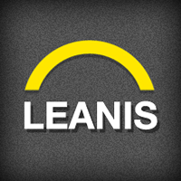

PROFILE
Love technology and gaming.
EMPLOYMENT HISTORY
Software Engineer at ZAPZAPMATH, PETALING JAYA
Apr 2017 → Current (2 years ++)
Develop backend API using PHP Laravel framework and webpages
SysAdmin / DevOps role using Docker with AWS.
PHP Laravel Developer at NETCCENTRIC LIMITED, PETALING JAYA
Jun 2016 → Mar 2017 (10 months)
Develop backend API using Laravel framework for Pitchduck, talent management application.
Software Engineer at CONVEP MOBILOGY SDN BHD, PETALING JAYA
Jun 2014 → Jun 2016 (2 years, 1 month)
Develop backend API using PHP Laravel and frontend websites using Twitter Bootstrap.
The backend API return data in json format for mobile apps.
Technical Consultant at LEANIS SOLUTIONS SDN BHD, PETALING JAYA
Mar 2013 → Jun 2014 (1 year, 4 months)
Develop in data integration for the Fiserv KRM project.
Develop in ETL process using SSIS & MS SQL Server.
Data Management Unit Analyst at AMBANK (M) BERHAD, KUALA LUMPUR

Feb 2010 → Mar 2013 (3 years, 2 months)
KPI is about data quality, data profiling monthly report.
Perform data cleansing, identify & solve data error.
Raise ACR, write functional specification document. Perform & sign off UAT.
EDUCATION
UNIVERSITY OF TUNKU ABDUL RAHMAN (UTAR), PETALING JAYA
May 2006 → Dec 2009
Degree: Bachelor’s Degree of Engineering
Course name: Computer Engineering
REFERENCES
Wiki Chua - chuawiki@gmail.com
Jeremy Hor - jemhor@gmail.com
Terry Osayawe - terrymarcy2000@yahoo.com